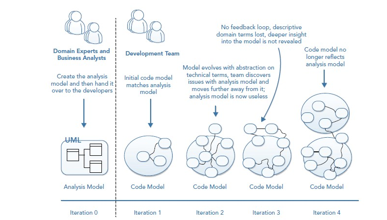

Alma Mater Studiorum - Università di Bologna
Computer Science and Engineering Department (DISI)
Domain-Driven Design
02 - Elements
A. Croatti
Laboratory of Software Systems
A.Y. 2020/2021
Knowledge Crunching
Knowledge Crunching
-
Knowledge crunching is the art of distilling relevant information from the problem domain to build a useful model that can fulfill the needs of business use cases.
- The key to bridging any knowledge gaps for the technical team when designing a solution for a problem domain.
-
In order for a team to produce a useful model they need to have a deep insight of the problem domain to ensure important concepts are not overlooked or misunderstood.
- This can only be done through working in collaboration with domain experts (brainstorming together).
-
The main goal: discover and agree on a shared understanding of the problem domain to produce a model that can fulfill business use cases.
Knowledge Crunching

Shared Understanding through a Shared Language
- An output of knowledge crunching and an artifact of the shared understanding is a common Ubiquitous Language (UL).
- This language must be made explicit and be used when describing the domain model and problem domain.
- The language should also be used in the code implementation of the model (with the same terms and concepts used as class names, properties, and method names).
- It is the language that enables both the business and development teams to have meaningful communication about the software.
-
The UL will contain terminology from the business as well as new concepts and terms discovered when modeling the use case of the problem domain.
-
The shared understanding obtained with a well defined UL prevents the need to constantly translate from a technical model to a business model.
The Importance of Domain Knowledge
-
Domain knowledge is key, even more so than technical know‐how.
-
Teams working in a business with complex processes and logic need to immerse themselves in the problem domain, assimilating all the relevant domain knowledge.
-
If you can’t speak to your business users in simple terms about complex concepts in the problem domain, you are not ready to start developing software within it.
The Role of Business Analysts
-
A business analyst can help stakeholders flesh out their initial ideas and capture inputs and outputs of the product.
-
If you have odd whiz‐kid developers and are nervous about putting them in front of domain experts, you can also use business analysts as facilitators to help communication.
-
What you don’t want to do is remove the direct communication between the development team and the people who understand that part of the business the most.
Who can act as a Business Analyst?
Knowledge crunching is an ongoing process
-
Model‐driven design and the evolution of a domain model is an ongoing process.
-
Many models must be rejected in order to ensure you have a useful modelfor the current use cases of a system.
- Collaboration among development team, business stakeholders, and subject matter experts should not be constrained to the start of a project.
-
Knowledge crunching should be an ongoing concern with the business engaged throughout the lifetime of the application build.
- Note: when the system is in use the model may also need to evolve due to technical reasons such as performance or a better understanding of the systems usage.
-
A good model must be “malleable”!
Domain Experts vs. Stakeholders

-
A problem space gives you a set of requirements, inputs, and expected outputs: this is usually provided from your stakeholders.
-
A solution space contains a model that can meet the needs of the requirements: this is where domain experts can help.
Effective Knowledge Crunching (1/3)
Creating a useful model is a collaborative experience: however, business users can also find it tiring and unproductive!
- Focus on the most interesting conversations
-
Start with the areas of the problem domain that keep the business up at night
- E.g.: Which parts of the current system are hard to use? Which manual processes stop them from doing value‐adding work? What changes would increase revenue or improve operational efficiencies and save money from the bottom line?
-
The most interesting conversations will reveal where you should spend most of your effort on creating a shared understanding and a shared language.
-
Effective Knowledge Crunching (2/3)
-
Start from the Use Cases
-
A use case lists the steps required to achieve a goal, including the interactions between users and systems.
-
Be careful to listen for domain terminology, because this forms the start of your shared language for describing and communicating the problem domain.
-
It’s also useful to read back the use case to the domain expert in your own understanding, so they can validate that you do understand the use case as they do.
-
Don’t try to jump to a solution too quickly before you truly understand and appreciate the problem.
-
-
Ask Powerful Questions
- The questions you ask during knowledge‐crunching sessions will go a long way toward your understanding of the importance of the product you are building and the intent behind it.
Effective Knowledge Crunching (3/3)
- Sketching
-
People often learn quicker by seeing visual representations of the concepts they are discussing.
-
Sketching simple diagrams is a common visualization technique DDD practitioners use to enhance knowledge-crunching sessions and maximize their time with domain experts.
- Useful diagrams: UML Use Case, UML Activity, CRC Cards
-
Keeping your diagrams at a consistent level of detail will prevent you from showing too much detail or too little detail, meaning everyone can understand what you are trying to convey. It’s often better to create multiple diagrams each at a different level of detail.
-
UML “Use Case” Diagram
-
The use case diagram in UML captures the behavior of a system as it appears to an outside user.
- It partitions the system functionality into transactions meaningful to actors (users of a system).
- The pieces of interactive functionality are called use cases.
-
A use case describes an interaction with actors as a sequence of messages between the system and one or more actors.
-
The term actor includes humans, as well as other computer systems and processes.
Use Case Diagram: An Example (1/2)

Actors
-
An actor is an idealization of an external person, process, or thing interacting with a system.
-
An actor characterizes the interactions that outside users may have with the system.
- At run time, one physical user may be bound to multiple actors within the system.
- Different users may be bound to the same actor and therefore represent multiple instances of the same actor definition.
- Each actor participates in one or more use cases.
-
The internal implementation of an actor is not relevant in the use case
- Actors may be defined in generalization hierarchies, in which an abstract actor description is shared and augmented by one or more specific actor descriptions.
Use Case
-
A use case is a coherent unit of externally visible functionality provided by a system unit and expressed by sequences of messages exchanged by the system unit and one or more actors of the system unit.
-
The purpose of a use case is to define a piece of coherent behavior without revealing the internal structure of the system.
-
In the model, the execution of each use case is independent of the others, although an implementation of the use cases may create implicit dependencies among them.
-
Each use case represents an orthogonal piece of functionality whose execution can be mixed with the execution of other use cases.
Use Case Diagram: An Example (2/2)

Use Cases Relationships
- A use case can participate in several relationships, in addition to the association with actors

UML “Activity” Diagram
-
An activity diagram is a graph of nodes and flows that shows the flow of control (and data) through the steps of a computation
- Execution steps can both sequential and concurrent
-
An activity definition contains activity nodes: each of them represents the performance of a step in a workflow
- Each node waits for the completion of its computation, then the execution proceeds to nodes found on the output flow
-
An activity diagram my contain branches and forking
-
Partitions can be used to organize activities in a model according to responsibility
-
An activity diagram
Activity Diagram: An Example (1/2)

TBC
Class Responsibility Collaboration (CRC) Cards
-
Because DDD is built around the core idea of a shared language, it is important to use knowledge-gathering techniques that focus on creating a concise and powerful language
-
CRC (Class Responsibility Collaboration) cards are divided into three areas and contain the following information:
- A class name, which represents a concept in the domain
- The responsibilities of the class
- Classes that are associated and are required to fulfill its purpose
-
CRC cards focus the team and the business experts on thinking about the language of the concepts in the problem domain.
-
Martin Fowler has described CRC cards as a viable alternative to UML sequence diagram to design the dynamics of object interaction and collaboration
CRC Cards: An Example

Rapid Prototyping
-
Favour rapid prototyping during knowledge‐crunching sessions!
- Business users like nothing more than screen mock‐ups, because they reveal so much more about the intent they have behind a product
- Users understand UI; they can interact with it and act out work flows clearly
-
Another form of rapid prototyping is to capture requirements in code
- Starting to code will help focus analysis sessions
- Starting to implement abstract ideas from knowledge crunching will enable you to validate and prove your model
- It also helps to avoid only abstract thinking, which can lead to analysis paralysis
-
Coding quickly helps create your powerful questions and helps find missing use cases
- NOTE (1): Coding at this level is part of the analysis process!
- NOTE (2): Only create a code model of what is relevant and within the specific context to solve a given problem; you can’t effectively model the entire domain.
Impact Mapping
-
Impact mapping allows to go beyond traditional requirements documents, working on what impacts the business is trying to make
-
Once you understand the impact the business is trying to make, you can play a more effective role in helping them to achieve it
- Significantly for DDD, you will be able to ask better questions during knowledge-crunching sessions since you know what the business wants to achieve
-
Impact mapping is a very informal technique
- You simply create mind‐map-like diagrams that accentuate key business information
Impact Mapping: An Example

Whirlpool Process of Model Exploration
-
A method of modeling and knowledge crunching that can complement other agile methodologies and be called upon at any time of need throughout the lifetime of application development
- Proposed by Eric Evans
-
It is used not as a modeling methodology but rather for when problems are encountered during the creation of a model.

Whirlpool’s Activities (1/2)
-
Scenario Exploring
- A domain expert describes a scenario (with concrete examples) that the team is worried about or having difficulty with in the problem domain
- Then, the group then maps the scenario, like event storming in a visual manner in an open space
-
Modeling
- At the same time of running through a scenario, the team starts to examine the current model and assesses its usefulness for solving the scenario expressed by the domain expert
-
Challenging the Model
- Once the team has amended the model or created a new model they then challenge it with further scenarios from the domain expert to prove its usefulness
Whirlpool’s Activities (2/2)
-
Harvesting and Documenting
- Significant scenarios that help demonstrate the model should be captured in documentation
- Business scenarios will change less often than the model so it is useful to have a collection of important ones as a reference
-
Code Probing
- When insight into the problem domain is unlocked and a design breakthrough occurs the technical team should prove it in code to ensure that it can be implemented
Focusing on the Core Domain
Focusing on the Core Domain
-
Not all parts of a problem are equal!
- Some parts of the application are more important than others
- Some parts need more attention and investment than others to make the application a success
-
During knowledge crunching with domain experts, it’s important to reduce the noise of what’s unimportant to enable you to focus on what is important
-
Domain-Driven Design is all about reducing complexity!
- A single monolithic model would increase the complexity
- You should break the problem domain down so that you are able to create smaller models in the solution space
Domain and Subdomains
-
Large problem domains can be partitioned into subdomains to manage complexity and to separate the important parts from the rest of the system
-
Understanding the subdomains of your system enables you to break down the problem space
-
Subdomains are abstract concepts
- don’t get subdomains confused with the organizational structure of a company
-
By distilling the problem domain you reduce complexity by dividing and conquering the problem
- Smaller models can be created and understood within the context of a subdomain
- This removes the need for a single large model to represent the entire problem domain
The Core Domain
-
To know where to invest the most effort and quality, it’s crucial to understand where the core domains are, because these are key to making software successful
-
This knowledge is distilled from knowledge‐crunching sessions working in collaboration with domain experts to understand the most important aspect of the product under design and development
-
What is core changes over time!
-
One of the fundamental shifts in mentality required for writing software for complex core domains is to focus on the product rather than view it as a standalone project
An Example: Auction Web Site (1/4)
-
We will consider the domain model of an online auction site
-
There are many different components that make up the large overall system
-
Some parts will be found in any online system, but some will be unique to the domain and specific business

An Example: Auction Web Site (2/4)
-
Membership: the area of the systems that deals with the registrations, preferences, and details of members.
-
Seller: all the processes and behaviors that deal with the seller activities
-
Auction: managing the timing of auctions and dealing with bid activity
-
Listings: the catalogs of items that are available on the auction site
-
Dispute resolution: the area that deals with disputes between members and sellers
An Example: Auction Web Site (3/4)
-
Core domains of the system are the seller and the auction.
- The seller domain contains the ratings for a seller and the domain logic for determining seller fees
- The auction core domain is the mechanism for running an auction and handling bids
-
The membership and listing domains support the core domains by providing bidders the opportunity to create accounts and find items for sale.
-
The dispute resolution domain is generic in that it can be served using a commercial off‐the‐shelf package

An Example: Auction Web Site (4/4)
-
The online auction site is divided into two physical applications
-
The dispute domain has been fulfilled by an off‐the‐shelf package while the core and supporting domains will be designed using a custom web application
Anticorruption Layer

- Wraps the communication with legacy or third‐party code to protect the integrity of a bounded context
- Manages the transformation of one context’s view to another, retaining the integrity of new code
Hints
-
Focus on clean boundaries over perfect models!
-
The Core Domain doesn’t always have to be perfect the first time!
-
Build Subdomains for replacement rather than reuse!
Model-Driven Design
From the Problem Space
to the Solution Space
-
it is important to implement in code the analysis model that was produced during knowledge-crunching sessions
-
DDD requires to produce a single model that serves as an analysis model for business people to understand and which is implemented using the same terminology and concepts in code
-
This process is known as Model‐Driven Design (MDD)
Model-Driven Design
-
Model‐Driven Design is the process of binding an analysis model to a code implementation model
- ensuring that both stay in sync and are useful during evolution
-
Model‐Driven Design differs from Domain-Driven Design
- MDD it is focused on implementation and any constraints that may require changes to an initial model
- DDD focuses on language, collaboration, and domain knowledge
-
The two complement each other
- The MDD approach enables domain knowledge and the shared language to be incorporated into a software model that mirrors the language and mental models of the business experts
The Domain Model
- The Domain Model is at the center of Domain‐Driven Design
- When it is expressed as a code implementation, it is bound to the analysis model through the use of the shared language
- The model contains only what is relevant to solve problems in the context of the system

The Domain Model Evolution Process
(without DDD-MDD)
The Domain Model Evolution Process
(following DDD-MDD)

About the Importance of the Ubiquitous Language
Ubiquitous Language (UL) represents the Key of an effective DDD-MDD approach
-
UL enables teams to organize both the mental and the code model with ease
- It achieves an unambiguous meaning because of the shared understanding that it brings to the teams
-
UL also provides clarity and consistency in meaning
- The language is ultimately expressed in code, but speech, sketch, and documentation are also important for creating the language
- The language is constantly explored, verified, and refined with new insights and greater knowledge
An Example (1/5)
- A business user is describing the process of customers at an e‐commerce site requesting a replacement for an order that wasn’t delivered
When a customer doesn’t receive her goods, she can request a new order for free. She logs into her account and clicks on the I Have Not Received My Items button. If she has already been flagged as having received a free order, she can’t get another one without speaking to customer service. Otherwise, we will send her a free order and update the database to show that this customer has already claimed for a lost item. We will then contact the courier to see if we can claim back the cost of the lost order.
An Example (2/5)
When a customer doesn’t receive her goods, she can request a new order for free. She logs into her account and clicks on the I Have Not Received My Items button. If she has already been flagged as having received a free order, she can’t get another one without speaking to customer service. Otherwise, we will send her a free order and update the database to show that this customer has already claimed for a lost item. We will then contact the courier to see if we can claim back the cost of the lost order.
- Is the use-case description focused on the business process?
An Example (3/5)
When a customer doesn’t receive her goods, she can request a new order for free. She logs into her account and clicks on the I Have Not Received My Items button. If she has already been flagged as having received a free order, she can’t get another one without speaking to customer service. Otherwise, we will send her a free order and update the database to show that this customer has already claimed for a lost item. We will then contact the courier to see if we can claim back the cost of the lost order.
- Is this sentence relevant for the domain model?
- Does it gives any value or insight?
An Example (4/5)
When a customer doesn’t receive her goods, she can request a new order for free. She logs into her account and clicks on the I Have Not Received My Items button. If she has already been flagged as having received a free order, she can’t get another one without speaking to customer service. Otherwise, we will send her a free order and update the database to show that this customer has already claimed for a lost item. We will then contact the courier to see if we can claim back the cost of the lost order.
- Some experts may have experience with databases and may go as far as suggesting
data schemas!
- This gives the team no deep understanding of the domain
An Example (5/5)
Rewriting the Use Case Description
If you have not received an order, you can submit an undelivered order notification. If this is your first claim, a replacement order is created. If you have made a claim before, your claim case is opened and assigned to a customer service representative, who will investigate the claim. In all cases, a lost mail compensation case is opened and sent to the courier with details of the consignment that was undelivered.
- This new description reveals many important domain concepts missing before
- The customer is no longer the most important concept!
Best Practices for Shaping the UL
-
Ensure that you have linguistic consistency
- If you are using a term in code that the domain expert doesn’t say, you need to check it with her
- It could be that you have found a concept that was required, so it needs to be added to the UL and understood by the domain expert
- Alternatively, maybe you misunderstood something that the domain expert said; therefore, you should rectify the code with the correct term
-
Create a glossary of domain terms with the domain expert to avoid confusion
- Ensure that you use one word for a specific concept
-
Don’t use terms that have a specific meaning in software development
- such as design pattern names…
-
Use the language to drive the design of your code
- The UL should be visible everywhere, from namespaces to classes, and from properties to method names
How to create effective domain models?
-
Don’t let the truth get in the way of a good model
- A domain model is not a model of real life; it is a system of abstractions on reality, an interpretation
-
Model only what is relevant
- You don’t have to include everything into the model
-
Domain models are temporarily useful
- A domain model needs to be constantly refined to continually be useful
-
Be explicit with terminology and limit your abstractions
-
Implement the model in code early and often